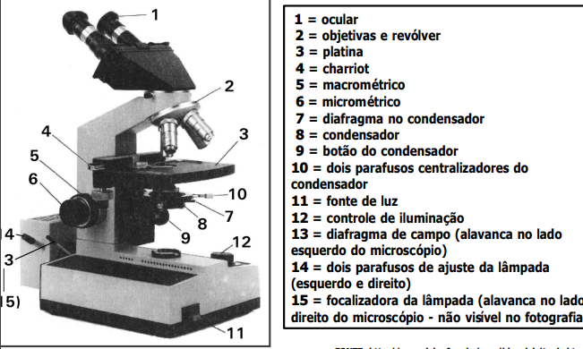
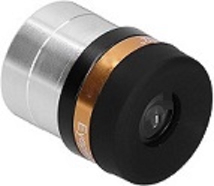
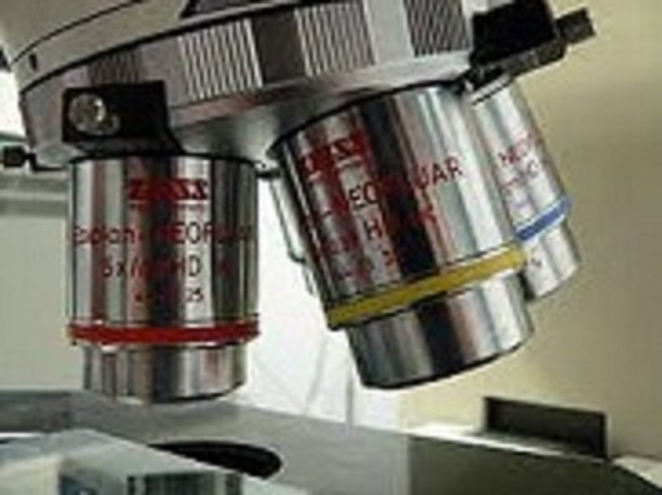
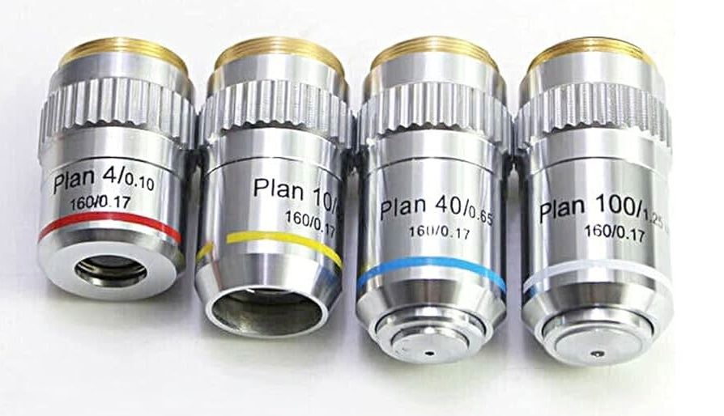
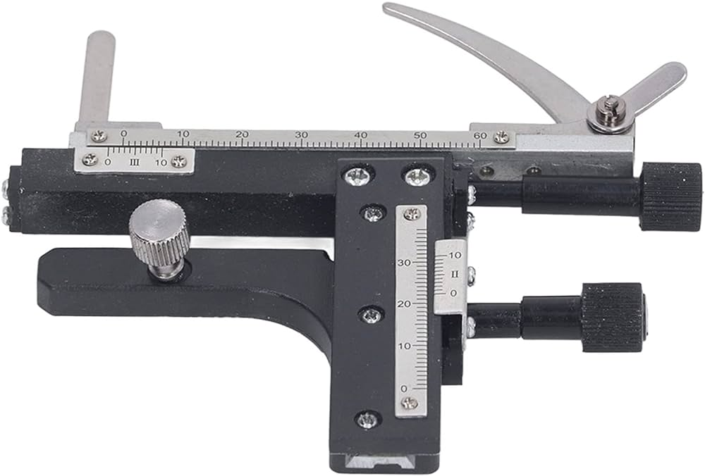
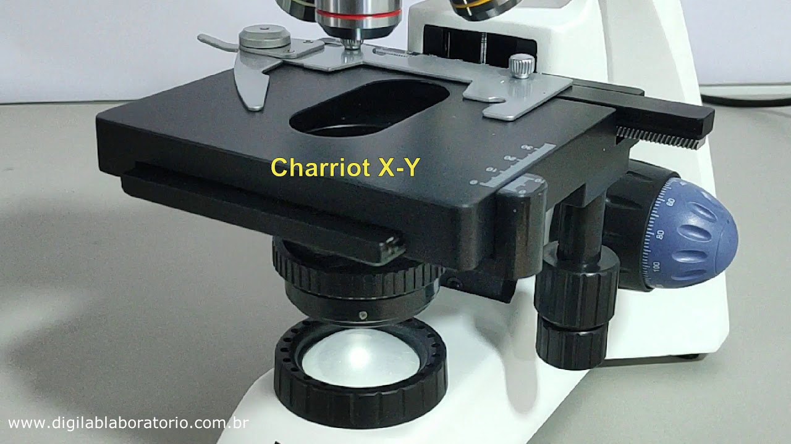
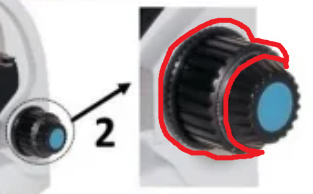

A terceira aula de biologia foi totalmente focado na história, definições e conceitos da Citologia, estudo das células, na qual se encontra o primeiro material de estudo da biologia. O foco da aula foi sobre citologia, mas no começo dela, o professor revisou os níveis de organização dos seres vivos e divisões da biologia.
Resumo do Dia:

Citologia
Esse é o assunto da biologia que se é estudado as células, as unidades básicas que constituem o corpo dos seres vivos (Exceto um).
O que são elas?
São a estrutura que forma todo o nosso corpo, cada parte dele é formado por milhões de células, impossível de ser visto a olho nu. Essas estruturas são vivas, armazenando o material genético (DNA) de um determinado organismo e são capazes de repassar essa informação a partir da meiose e mitose. De acordo com a Teoria Celular, todos os seres vivos são constituídos de células, existindo aqueles que são apenas unicelulares e o seu interior é autossuficiente para realizar todos os trabalhos necessários. Já aqueles que são pluricelulares necessitam de um grande aglomerado de células para formar o corpo e realizar diferentes tipos de trabalho.
história das Celulas
Em 1591, dois homens chamados Hans e Zaccharias Jannsen inventaram um aparelho chamado Microscópio, esse aparelho poderia ampliar imagens que seriam impossíveis de ver a olho nu, já em 1632, Anton van Leeuwenhoek fez as primeiras observações com um microscópio simples, ele analisou Glóbulos Vermelhos, Bactérias e Espermatozoides. Em 1665, Robert Hooke aprimorou o aparelho de Anton e conseguiu observar “células” em uma cortiça ou súber utilizando o Microscópio Composto. Em 1838, os cientistas Mathias Schleiden e Theodor Schwann criaram a “Teoria Celular: Todos os seres vivos são constituídos por células”. Quando este fato é citado da forma: “de acordo com a teoria celular feita por Mathias S. e Theodor S.”, está correto, mas quando apenas citado que todos os seres vivos possuem células está errado, pois o Vírus não possui células, sendo formado apenas por proteínas, material genético entre outras poucas coisas. Continuando, uma célula apenas surge através de outra célula com o processo de Mitose, e também, todas as reações metabólicas ocorrem no interior das células.
Microscópios
Existiriam vários tipos de microscópios, desde o primeiro em 1591 até os dias de hoje, os mais conhecidos atualmente são o Ópticos ou de Luz (óptica diferente de ótica) e o microscópio Eletrônico.
O microscópio de luz chega de 1000 até 2000 vezes. Pode ser usado para examinar manchas, preparações esmagadas, ou uma fatia fina, luz detectadas diretamente pelo olho, fotografia ou projetadas em tela.
O microscópio eletrônico chega até 100 milhões de vezes. Pode ser observado com feixe de elétrons; imagens em tela fluorescente/placa fotográfica. MET ~MO, gera imagem em uma fatia fina do objeto. Construção em 1930, por Ernst Ruska. MEV: imagem superficial do objeto.
Funções do microscópio
1 - Lente ocular
É a primeira lente do microscópio que aumenta a imagem produzida pela objetiva do microscópio.
2 - Revólver
É o mecanismo que permite girar e trocar as lentes objetivas.
3.1 - Objetivas
São o conjunto de lentes localizadas na parte inferior, perto da amostra. São responsáveis pela maior parte da ampliação e resolução da imagem.
3.2 - Platina
É a plataforma onde colocam-se as amostras e o material a ser observado.
4 - Charriot
O charriot permite fixar a lâmina sobre a platina e sua movimentação.
5 - Macrométrico
Permite ajustar a platina com movimentos maiores.
6 - Micrométricos
Permite ajustar a platina com movimentos menores, mas com uma maior precisão.

7 - Diafragma no condensador
Controla a abertura do condensador, regulando a quantidade de luz.

8 - Condensador
Conjunto de duas ou mais lentes convergentes que orientam e espalham regularmente a luz emitida pela fonte luminosa sobre o campo de visão do microscópio.

9 - Botão do condensador
Ajusta o condensador.
10 - Os 2 Parafusos centralizadores do condensador
Ajuda A centralizar o condensador.
11 - Interruptor
Interruptor que liga a Fonte de luz do microscópio.
12 - Controle de iluminação
Controla a intensidade luminosa.
13 - Diafragma de campo
Regula a quantidade de luz que atinge o campo de visão do microscópio
14 - dois parafusos de ajuste da lâmpada
ajuste da lâmpada
15 - Focalizadora da lâmpada
Focaliza a lâmpada